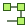

Find the starting point
You ask
List the screens in my prototype.
Relevant tool
list_screens()

design-graphHTML PROTOTYPES → AGENT CONTEXT
Turn standalone HTML prototypes into a typed knowledge graph. Query screens, components and design tokens from your terminal or through a local MCP server.
Python 3.10+ · CLI + MCP · Local graph storage
From prototype to specific context
get_component(name="BtnPrimary", doc="simple")
WHAT IT IS
Design Graph reads the structure and details in supported HTML prototypes and stores them in a Kuzu graph. Your agent can request a screen, inspect a component or look up tokens instead of reading the entire HTML file for every task.
For frontend developers and designers handing HTML prototypes to coding agents.
Start from a supported HTML file. This is not a live design-tool connection.
Read the supported formatsLOCAL SETUP
You need Python 3.10+ and pip or pipx. An MCP client is optional if you only use the CLI.
Install the package and check that the command is available.
Installation optionspython3 -m pip install design-graph
design-graph --versionPrefer isolated CLI installs? Use pipx instead of pip.
pipx install design-graphRun this with your HTML file. Replace prototype.html with its path. The default database name is the file name without .html.
design-graph prototype.html
design-query screensWith multiple databases, select one explicitly:
design-query --doc "prototype" screensThe MCP server runs locally over stdio. There is no hosted server URL to paste.
MCP configuration detailsAdd this entry to ~/.cursor/mcp.json or your project's .cursor/mcp.json. Merge it into any existing configuration.
{
"mcpServers": {
"design-graph": {
"command": "design-mcp"
}
}
}claude mcp add --scope user design-graph -- design-mcp
claude mcp get design-graphBuild your graph before querying it. With multiple prototypes, pass doc in a tool call or select one with set_prototype. The client must be able to find design-mcp on its PATH.
ASK FOR WHAT YOU NEED
Example prompts for a connected MCP client. The agent chooses the tools; these are not buttons that run a query. Replace fixture names with names from your own graph.
You ask
List the screens in my prototype.
Relevant tool
list_screens()
You ask
Show BtnPrimary, including its props and hover state.
Relevant tool
get_component(name="BtnPrimary", doc="simple")
You ask
Give me the context to implement RestaurantsPage.
Relevant tool
assemble_page(name="RestaurantsPage", doc="simple")
You ask
Which color tokens does this prototype use?
Relevant tool
get_tokens(category="color", doc="simple")
BtnPrimary, RestaurantsPage and simple are repository-fixture examples, not names every prototype contains.
INSIDE THE GRAPH
Inspect screen outlines, sections and component hierarchy.
get_screen · get_component
Query extracted color, spacing, typography and other tokens, including their modes when present.
get_tokens
Find named elements and text, then inspect who uses a component or token.
search · impact
Request a screen's skeleton, component definitions, referenced data and tokens. Long answers are returned in parts.
assemble_page · get_full
List prototype resources and extract embedded fonts or images into your workspace.
get_resources · get_asset
Review screens and components added or removed since the previous build, and check graph integrity from the CLI.
get_build_diff · design-graph validate
BEFORE YOU START
No. You can build and query graphs with the CLI. Connect an MCP-compatible client only if you want an agent to use the tools.
No. Design Graph exposes a local stdio server through design-mcp. The setup above shows the documented Cursor and Claude Code configurations.
Supported inputs are single-file HTML prototypes with bundled React, Tailwind or plain HTML, and DC canvas bundles containing DC pages. Check the supported formats before building your graph.
Each HTML file gets its own database by default. Select a database with --doc in the CLI, or pass doc to an MCP tool call. Use --db when same-named HTML files need separate databases.
No. Graph validation checks integrity. The MCP component-implementation check is best-effort and cannot fully verify stylesheet or utility-class styling. Review the rendered implementation separately.
Yes. Run design-graph on the HTML file again. Unchanged files are skipped unless you use --force. The MCP server detects rebuilt databases; reconnect after changing its graph-directory configuration or upgrading the package.
Install Design Graph, build a local graph and ask for the context your next UI task needs.